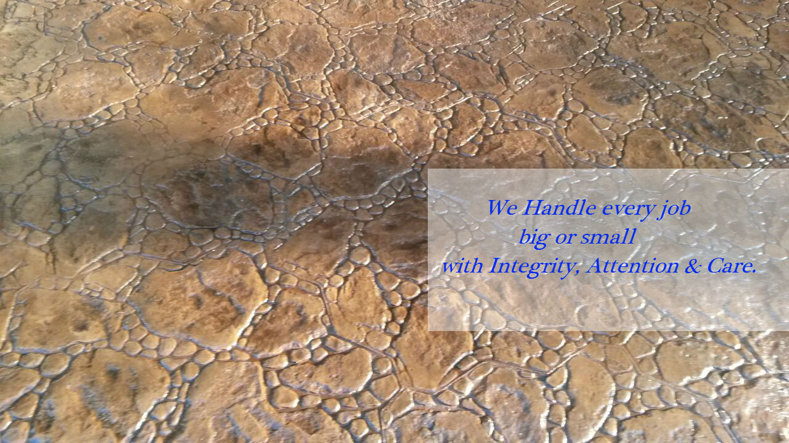

Welcome To ARC FLOORING MAGIC & CONSTRUCTIONS.
We are a construction company where we take or handle every job given to us - big or small with the same integrity, attention & care as for everyone. We have and we are contributing significantly in every construction work associated with Paving Systems. Our main focus & highly experienced work area is with Stamp concrete Patios, Decks, Pool decks, Walkways, Driveways Etc. Stamp concrete gives a very cost effective replica of more expensive materials without giving up its natural & authentic look. When it comes to Stamp concrete work we can definitely say that no one knows better than us. From an aesthetic standpoint, Stamp concrete work we do is hard to beat when it comes to pattern & colour option which are virtually unlimited. We have transformed many Patios, Decks, Pool Deck, Walkways, Driveways Etc, with stunning & eye catching designs of stamp concrete with which almost nothing goes wrong. About in past years we have completed many stamp concrete projects. & not just private work but for various Municipal Corporations too. And yes we can say it proudly that we have a lot of satisfied customers which are in love with work that we have done for them. For us your happiness & a token of appreciation is much more important than anything else.